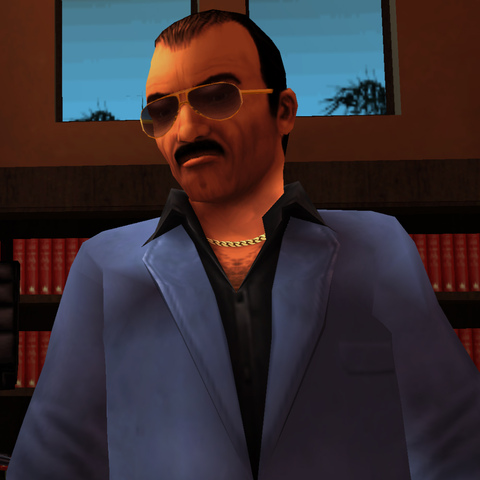
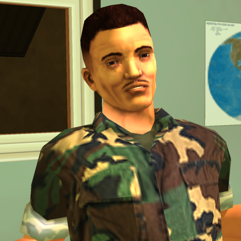
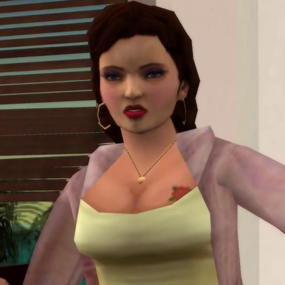
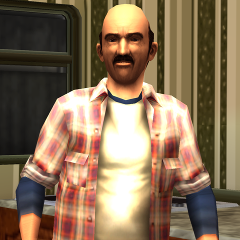
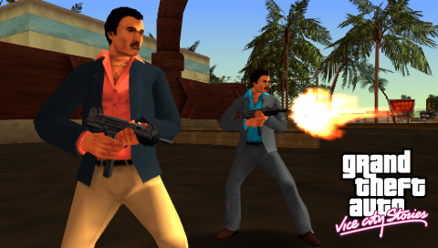
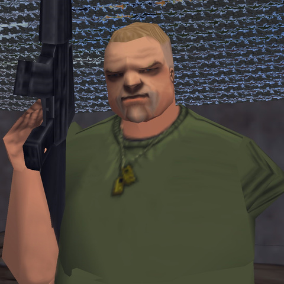
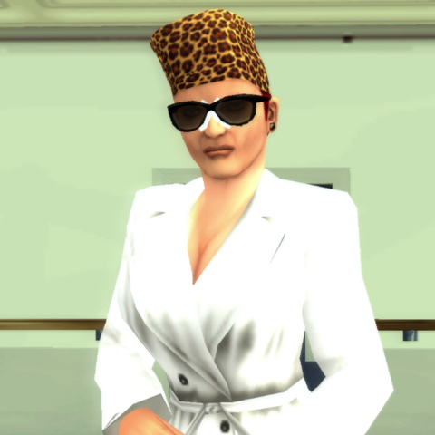
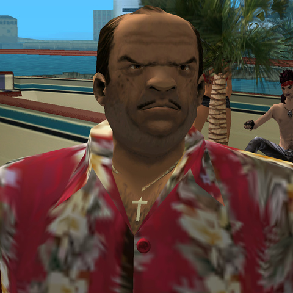
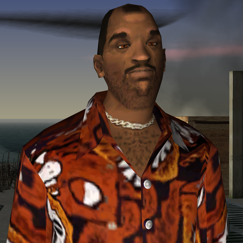

VCS
Characters
 Armando Mendez
Armando Mendez Bryan Forbes
Bryan Forbes
Diego Mendez Gonzales
Gonzales Gonzalez
Gonzalez
Jerry Martinez Lance Vance
Lance Vance
Louise Cassidy-Williams
Marty Jay Williams
Mendez Brothers
Phil Cassidy
Reni Wassulmaier
Ricardo Diaz Umberto Robina
Umberto Robina
Victor Vance
| Image | Name | Role | Affiliations | Status |
|---|---|---|---|---|
| Armando Mendez | Antagonist | Mendez Cartel | Deceased |
| Bryan Forbes | Antagonist | Mendez Cartel | Deceased |
| Diego Mendez | Antagonist | Mendez Cartel | Deceased | |
| Gonzales | Mission giver | — | — |
| Gonzalez | Associate | Diaz Cartel | Alive |
| Jerry Martinez | Antagonist | Mendez Cartel, Army | Deceased | |
| Lance Vance | Brother, ally | Vance Crime Family | Alive |
| Louise Cassidy-Williams | Ally | Vance Crime Family | Deceased | |
| Marty Jay Williams | Antagonist | Trailer Park gang | Deceased | |
| Mendez Brothers | Mission giver | — | — | |
| Phil Cassidy | Ally, gun runner | Vance Crime Family | Alive | |
| Reni Wassulmaier | Ally, film director | InterGlobal Films | Alive | |
| Ricardo Diaz | Associate | Diaz Cartel | Alive | |
| Umberto Robina | Ally | Los Cabrones | Alive |
| Victor Vance | Protagonist | Vance Crime Family, Army (former) | Deceased |